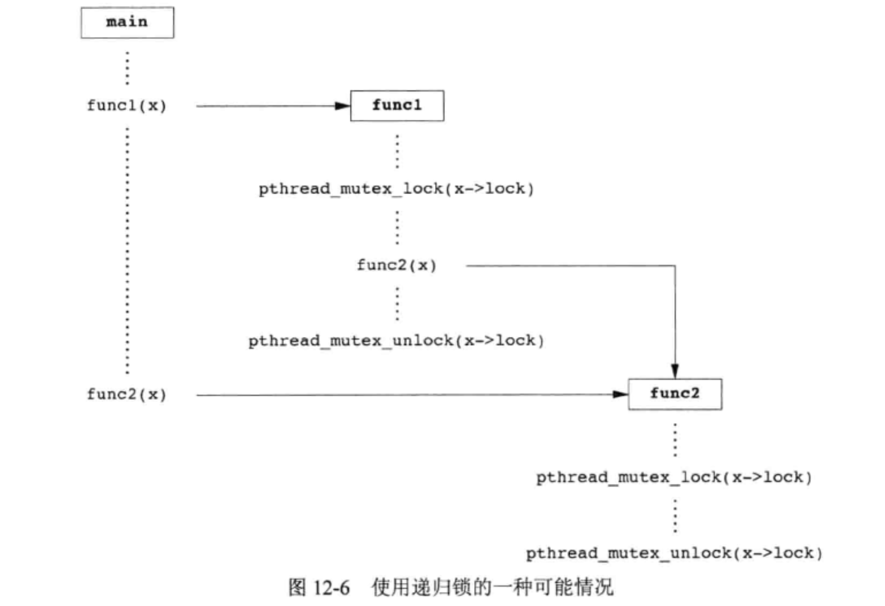

<!DOCTYPE html>
<html lang="en">

<head>
  <meta charset="utf-8" />
   
  <meta name="keywords" content="生活,旅行,思考,代码,博客" />
   
  <meta name="description" content="一座孤岛" />
  
  <meta name="viewport" content="width=device-width, initial-scale=1, maximum-scale=1" />
  <title>
    《APUE》ch12——线程控制 |  akaQin&#39;s Blog
  </title>
  <meta name="generator" content="hexo-theme-yilia-plus">
  
  <link rel="shortcut icon" href="/favicon.ico" />
  
  
<link rel="stylesheet" href="/css/style.css">

  
<script src="/js/pace.min.js"></script>


  

  

<link rel="alternate" href="/atom.xml" title="akaQin's Blog" type="application/atom+xml">
</head>

</html>

<body>
  <div id="app">
    <main class="content">
      <section class="outer">
  <article id="post-《APUE》ch12——线程控制" class="article article-type-post" itemscope
  itemprop="blogPost" data-scroll-reveal>

  <div class="article-inner">
    
    <header class="article-header">
       
<h1 class="article-title sea-center" style="border-left:0" itemprop="name">
  《APUE》ch12——线程控制
</h1>
  

    </header>
    

    
    <div class="article-meta">
      <a href="/2020/01/07/%E3%80%8AAPUE%E3%80%8Bch12%E2%80%94%E2%80%94%E7%BA%BF%E7%A8%8B%E6%8E%A7%E5%88%B6/" class="article-date">
  <time datetime="2020-01-07T02:53:02.000Z" itemprop="datePublished">2020-01-07</time>
</a>
      
  <div class="article-category">
    <a class="article-category-link" href="/categories/%E3%80%8AAPUE%E3%80%8B%E7%AC%94%E8%AE%B0/">《APUE》笔记</a>
  </div>

      
      
<div class="word_count">
    <span class="post-time">
        <span class="post-meta-item-icon">
            <i class="ri-quill-pen-line"></i>
            <span class="post-meta-item-text"> 字数统计:</span>
            <span class="post-count">3.2k字</span>
        </span>
    </span>

    <span class="post-time">
        &nbsp; | &nbsp;
        <span class="post-meta-item-icon">
            <i class="ri-book-open-line"></i>
            <span class="post-meta-item-text"> 阅读时长≈</span>
            <span class="post-count">12分钟</span>
        </span>
    </span>
</div>

      
    </div>
    

    
    
    <div class="tocbot"></div>


    

    
    <div class="article-entry" itemprop="articleBody">
      


      

      
      <h2 id="线程限制"><a href="#线程限制" class="headerlink" title="线程限制"></a>线程限制</h2><p>Single UNIX Specification定义了一些与线程操作有关的限制，这些限制是为了增强应用程序在不同的操作系统实现之间的可移植性，可以通过<code>sysconf</code>函数进行查询。</p>
<ul>
<li>线程退出时操作系统试图销毁特定数据的最大次数</li>
<li>进程可创建的键的最大数目</li>
<li>一个线程的栈可用的最小字节数</li>
<li>进程可创建的最大线程数</li>
</ul>
<h2 id="线程属性"><a href="#线程属性" class="headerlink" title="线程属性"></a>线程属性</h2><p>通过设置每个对象关联的不同属性来细调线程和同步对象的行为。</p>
<figure class="highlight c"><table><tr><td class="gutter"><pre><span class="line">1</span><br><span class="line">2</span><br><span class="line">3</span><br><span class="line">4</span><br><span class="line">5</span><br><span class="line">6</span><br><span class="line">7</span><br><span class="line">8</span><br><span class="line">9</span><br><span class="line">10</span><br><span class="line">11</span><br><span class="line">12</span><br><span class="line">13</span><br><span class="line">14</span><br><span class="line">15</span><br><span class="line">16</span><br><span class="line">17</span><br><span class="line">18</span><br><span class="line">19</span><br><span class="line">20</span><br></pre></td><td class="code"><pre><span class="line"></span><br><span class="line"><span class="comment">//线程属性初始化/反初始化</span></span><br><span class="line"><span class="function"><span class="keyword">int</span> <span class="title">pthread_attr_init</span><span class="params">(<span class="keyword">pthread_attr_t</span> *attr)</span></span>;</span><br><span class="line"><span class="function"><span class="keyword">int</span> <span class="title">pthread_attr_destroy</span><span class="params">(<span class="keyword">pthread_attr_t</span> *attr)</span></span>;</span><br><span class="line"></span><br><span class="line"><span class="comment">//获取/设置当前的detachstate线程属性</span></span><br><span class="line"><span class="function"><span class="keyword">int</span> <span class="title">pthread_attr_getdetachstate</span><span class="params">(<span class="keyword">const</span> <span class="keyword">pthread_attr_t</span> *<span class="keyword">restrict</span> attr, <span class="keyword">int</span> *detachstate)</span></span>;</span><br><span class="line"><span class="function"><span class="keyword">int</span> <span class="title">pthread_attr_setdetachstate</span><span class="params">(<span class="keyword">pthread_attr_t</span> *attr, <span class="keyword">int</span> *detachstate)</span></span>;</span><br><span class="line"></span><br><span class="line"><span class="comment">//获取/设置线程栈属性</span></span><br><span class="line"><span class="function"><span class="keyword">int</span> <span class="title">pthread_attr_getstack</span><span class="params">(<span class="keyword">const</span> <span class="keyword">pthread_attr_t</span> *<span class="keyword">restrict</span> attr, <span class="keyword">void</span> **<span class="keyword">restrict</span> stackaddr, <span class="keyword">size_t</span> *<span class="keyword">restrict</span> stacksize)</span></span>;</span><br><span class="line"><span class="function"><span class="keyword">int</span> <span class="title">pthread_attr_setstack</span><span class="params">(<span class="keyword">pthread_attr_t</span> *attr, <span class="keyword">void</span> *stackaddr, <span class="keyword">size_t</span> stacksize)</span></span>;</span><br><span class="line"></span><br><span class="line"><span class="comment">//获取/设置栈大小</span></span><br><span class="line"><span class="function"><span class="keyword">int</span> <span class="title">pthread_attr_getstacksize</span><span class="params">(<span class="keyword">const</span> <span class="keyword">pthread_attr_t</span> *<span class="keyword">restrict</span> attr, <span class="keyword">size_t</span> *<span class="keyword">restrict</span> stacksize)</span></span>;</span><br><span class="line"><span class="function"><span class="keyword">int</span> <span class="title">pthread_attr_setstacksize</span><span class="params">(<span class="keyword">pthread_attr_t</span> *attr, <span class="keyword">size_t</span> stacksize)</span></span>;</span><br><span class="line"></span><br><span class="line"><span class="comment">//获取/设置警戒缓冲区（用于避免栈溢出的扩展内存）大小</span></span><br><span class="line"><span class="function"><span class="keyword">int</span> <span class="title">pthread_attr_getguardsize</span><span class="params">(<span class="keyword">const</span> <span class="keyword">pthread_attr_t</span> *<span class="keyword">restrict</span> attr, <span class="keyword">size_t</span> *<span class="keyword">restrict</span> guardsize)</span></span>;</span><br><span class="line"><span class="function"><span class="keyword">int</span> <span class="title">pthread_attr_setguardsize</span><span class="params">(<span class="keyword">pthread_attr_t</span> * attr, <span class="keyword">size_t</span> guardsize)</span></span>;</span><br></pre></td></tr></table></figure>

<a id="more"></a>

<p><strong>对于进程来说，虚拟地址的空间大小是固定的，因为进程中只有一个栈，所以大小通常不是问题。但对于线程来说，同样大小的虚拟地址空间必须被所有线程共享。如果应用程序使用了许多线程，以致这些线程的累计大小超过了可用的虚拟地址空间，就需要减少默认的线程栈大小。另一方面，如果线程调用的函数分配了大量的自动变量，或者调用的函数涉及许多很深的栈帧，那么需要的栈大小可能要比默认的大</strong><br>如果线程的虚拟地址空间都用完了，可以使用malloc或者mmap来为可替代的栈分配空间，并使用<code>pthread_attr_setstack</code>函数来改变新建线程的栈位置。</p>
<h2 id="同步属性"><a href="#同步属性" class="headerlink" title="同步属性"></a>同步属性</h2><h3 id="互斥量属性"><a href="#互斥量属性" class="headerlink" title="互斥量属性"></a>互斥量属性</h3><p>用 pthread_mutex_attr 结构表示，值得注意的三个属性是：</p>
<ul>
<li>进程共享属性<br>允许相互独立的多个进程把同一个内存数据块映射到它们各自独立的地址空间中。就像多个线程访问共享数据一样，多个进程访问共享数据通常也需要同步。如果进程共享互斥量属性设置为 PTHREAD_PROCESS_SHARED，从多个进程彼此之间共享的内存数据块中分配的互斥量就可以用于这些进程的同步；设置为 PTHREAD_PROCESS_PRIVATE时，允许pthread线程库提供更有效的互斥量实现，这在多线程应用程序中是默认情况。</li>
<li>健壮属性<br>与多个进程共享的互斥量有关。当持有互斥量的进程终止时，需要解决互斥量状态修复的问题。健壮属性默认值是 PTHREAD_MUTEX_STALLED，这意味着持有互斥量的进程终止时不需要采取特别的动作，而等待互斥量的应用程序会被有效的“拖住”。另一个取值是 PTHREAD_MUTEX_ROBUST，这个值将导致线程调用 pthread_mutex_lock获取锁，而该锁被另一个进程持有，但它终止时没有进行解锁，此时线程会阻塞，从pthread_mutex_lock 返回的值为 EONWERDEAD 而不是0。</li>
<li>类型属性<ul>
<li>PTHREAD_MUTEX_NORMAL 一种标准互斥量类型，不做任何特殊的错误检查或死锁检测。</li>
<li>PTHREAD_MUTEX_ERRORCHECK 此互斥量类型提供错误检查</li>
<li>PTHREAD_MUTEX_RECURSIVE 此类型允许多次加锁，递归维护锁计数，解锁次数和加锁次数不一致时，锁不会释放。</li>
<li>PTHREAD_MUTEX_DEFAULT 上述三种类型之一</li>
</ul>
</li>
</ul>
<figure class="highlight c"><table><tr><td class="gutter"><pre><span class="line">1</span><br><span class="line">2</span><br><span class="line">3</span><br><span class="line">4</span><br><span class="line">5</span><br><span class="line">6</span><br><span class="line">7</span><br><span class="line">8</span><br><span class="line">9</span><br><span class="line">10</span><br><span class="line">11</span><br><span class="line">12</span><br><span class="line">13</span><br><span class="line">14</span><br><span class="line">15</span><br><span class="line">16</span><br><span class="line">17</span><br></pre></td><td class="code"><pre><span class="line"><span class="comment">//互斥量属性初始化/反初始化</span></span><br><span class="line"><span class="function"><span class="keyword">int</span> <span class="title">pthread_mutexattr_init</span><span class="params">(<span class="keyword">pthread_mutexattr_t</span> *attr)</span></span>;</span><br><span class="line"><span class="function"><span class="keyword">int</span> <span class="title">pthread_mutexattr_destroy</span><span class="params">(<span class="keyword">pthread_mutexattr_t</span> *attr)</span></span>;</span><br><span class="line"></span><br><span class="line"><span class="comment">//获取/设置共享属性</span></span><br><span class="line"><span class="function"><span class="keyword">int</span> <span class="title">pthread_mutexattr_getpshared</span><span class="params">(<span class="keyword">const</span> <span class="keyword">pthread_mutexattr_t</span> *<span class="keyword">restrict</span> attr, <span class="keyword">int</span> *<span class="keyword">restrict</span> pshared)</span></span>;</span><br><span class="line"><span class="function"><span class="keyword">int</span> <span class="title">pthread_mutexattr_setpshared</span><span class="params">(<span class="keyword">pthread_mutexattr_t</span> *attr, <span class="keyword">int</span> pshared)</span></span>;</span><br><span class="line"></span><br><span class="line"><span class="comment">//获取/设置健壮属性</span></span><br><span class="line"><span class="function"><span class="keyword">int</span> <span class="title">pthread_mutexattr_getrobust</span><span class="params">(<span class="keyword">const</span> <span class="keyword">pthread_mutexattr_t</span> *<span class="keyword">restrict</span> attr, <span class="keyword">int</span> *<span class="keyword">restrict</span> robust)</span></span>;</span><br><span class="line"><span class="function"><span class="keyword">int</span> <span class="title">pthread_mutexattr_setrobust</span><span class="params">(<span class="keyword">pthread_mutexattr_t</span> *attr, <span class="keyword">int</span> robust)</span></span>;</span><br><span class="line"><span class="comment">//指明与该互斥量相关的状态在互斥量解锁之前是一致的</span></span><br><span class="line"><span class="function"><span class="keyword">int</span> <span class="title">pthread_mutex_consistent</span><span class="params">(<span class="keyword">pthread_mutex_t</span> *mutex)</span></span>;</span><br><span class="line"></span><br><span class="line"><span class="comment">//获取/设置类型属性</span></span><br><span class="line"><span class="function"><span class="keyword">int</span> <span class="title">pthread_mutexattr_gettype</span><span class="params">(<span class="keyword">const</span> <span class="keyword">pthread_mutexattr_t</span> *<span class="keyword">restrict</span> attr, <span class="keyword">int</span> *<span class="keyword">restrict</span> type)</span></span>;</span><br><span class="line"><span class="function"><span class="keyword">int</span> <span class="title">pthread_mutexattr_settype</span><span class="params">(<span class="keyword">pthread_mutexattr_t</span> *attr, <span class="keyword">int</span> type)</span></span>;</span><br></pre></td></tr></table></figure>

<p>关于递归锁的使用场景：<br><br></p>
<h3 id="读写锁属性"><a href="#读写锁属性" class="headerlink" title="读写锁属性"></a>读写锁属性</h3><ul>
<li>进程共享属性（同上）<figure class="highlight c"><table><tr><td class="gutter"><pre><span class="line">1</span><br><span class="line">2</span><br><span class="line">3</span><br><span class="line">4</span><br><span class="line">5</span><br><span class="line">6</span><br><span class="line">7</span><br></pre></td><td class="code"><pre><span class="line"><span class="comment">//初始化/反初始化</span></span><br><span class="line"><span class="function"><span class="keyword">int</span> <span class="title">pthread_rwlockattr_init</span><span class="params">(<span class="keyword">pthread_rwlockattr_t</span> *attr)</span></span>;</span><br><span class="line"><span class="function"><span class="keyword">int</span> <span class="title">pthread_rwlockattr_destroy</span><span class="params">(<span class="keyword">pthread_rwlockattr_t</span> *attr)</span></span>;</span><br><span class="line"></span><br><span class="line"><span class="comment">//获取/设置共享属性</span></span><br><span class="line"><span class="function"><span class="keyword">int</span> <span class="title">pthread_rwlockattr_getpshared</span><span class="params">(<span class="keyword">const</span> <span class="keyword">pthread_rwlockattr_t</span> *<span class="keyword">restrict</span> attr, <span class="keyword">int</span> *<span class="keyword">restrict</span> pshared)</span></span>;</span><br><span class="line"><span class="function"><span class="keyword">int</span> <span class="title">pthread_rwlockattr_setpshared</span><span class="params">(<span class="keyword">pthread_rwlockattr_t</span> *attr, <span class="keyword">int</span> pshared)</span></span>;</span><br></pre></td></tr></table></figure>

</li>
</ul>
<h3 id="条件变量属性"><a href="#条件变量属性" class="headerlink" title="条件变量属性"></a>条件变量属性</h3><ul>
<li>进程共享属性（同上）</li>
<li>时钟属性：控制计算 pthread_cond_timewait 函数的超时参数（tsptr）时采用的是哪个时钟。</li>
</ul>
<figure class="highlight c"><table><tr><td class="gutter"><pre><span class="line">1</span><br><span class="line">2</span><br><span class="line">3</span><br><span class="line">4</span><br><span class="line">5</span><br><span class="line">6</span><br><span class="line">7</span><br><span class="line">8</span><br><span class="line">9</span><br><span class="line">10</span><br><span class="line">11</span><br></pre></td><td class="code"><pre><span class="line"><span class="comment">//初始化/反初始化</span></span><br><span class="line"><span class="function"><span class="keyword">int</span> <span class="title">pthread_condattr_init</span><span class="params">(<span class="keyword">pthread_condattr_t</span> *attr)</span></span>;</span><br><span class="line"><span class="function"><span class="keyword">int</span> <span class="title">pthread_condattr_destroy</span><span class="params">(<span class="keyword">pthread_condattr_t</span> *attr)</span></span>;</span><br><span class="line"></span><br><span class="line"><span class="comment">//获取/设置共享属性</span></span><br><span class="line"><span class="function"><span class="keyword">int</span> <span class="title">pthread_condattr_getpshared</span><span class="params">(<span class="keyword">const</span> <span class="keyword">pthread_condattr_t</span> *<span class="keyword">restrict</span> attr, <span class="keyword">int</span> *<span class="keyword">restrict</span> pshared)</span></span>;</span><br><span class="line"><span class="function"><span class="keyword">int</span> <span class="title">pthread_condattr_setpshared</span><span class="params">(<span class="keyword">pthread_condattr_t</span> *attr, <span class="keyword">int</span> pshared)</span></span>;</span><br><span class="line"></span><br><span class="line"><span class="comment">//获取/设置时钟属性</span></span><br><span class="line"><span class="function"><span class="keyword">int</span> <span class="title">pthread_condattr_getclock</span><span class="params">(<span class="keyword">const</span> <span class="keyword">pthread_condattr_t</span> *<span class="keyword">restrict</span> attr, <span class="keyword">clockid_t</span> *<span class="keyword">restrict</span> clock_id)</span></span>;</span><br><span class="line"><span class="function"><span class="keyword">int</span> <span class="title">pthread_condattr_setclock</span><span class="params">(<span class="keyword">pthread_condattr_t</span> *attr, <span class="keyword">clockid_t</span> clock_id)</span></span>;</span><br></pre></td></tr></table></figure>

<h3 id="屏障属性"><a href="#屏障属性" class="headerlink" title="屏障属性"></a>屏障属性</h3><ul>
<li>进程共享属性（同上）</li>
</ul>
<figure class="highlight c"><table><tr><td class="gutter"><pre><span class="line">1</span><br><span class="line">2</span><br><span class="line">3</span><br><span class="line">4</span><br><span class="line">5</span><br><span class="line">6</span><br><span class="line">7</span><br></pre></td><td class="code"><pre><span class="line"><span class="comment">//初始化/反初始化</span></span><br><span class="line"><span class="function"><span class="keyword">int</span> <span class="title">pthread_barrierattr_init</span><span class="params">(<span class="keyword">pthread_barrierattr_t</span> *attr)</span></span>;</span><br><span class="line"><span class="function"><span class="keyword">int</span> <span class="title">pthread_barrierattr_destroy</span><span class="params">(<span class="keyword">pthread_barrierattr_t</span> *attr)</span></span>;</span><br><span class="line"></span><br><span class="line"><span class="comment">//获取/设置共享属性</span></span><br><span class="line"><span class="function"><span class="keyword">int</span> <span class="title">pthread_barrierattr_getpshared</span><span class="params">(<span class="keyword">const</span> <span class="keyword">pthread_barrierattr_t</span> *<span class="keyword">restrict</span> attr, <span class="keyword">int</span> *<span class="keyword">restrict</span> pshared)</span></span>;</span><br><span class="line"><span class="function"><span class="keyword">int</span> <span class="title">pthread_barrierattr_setpshared</span><span class="params">(<span class="keyword">pthread_barrierattr_t</span> *attr, <span class="keyword">int</span> pshared)</span></span>;</span><br></pre></td></tr></table></figure>

<h2 id="重入"><a href="#重入" class="headerlink" title="重入"></a>重入</h2><p>线程在遇到重入问题时与信号处理程序是类似的。在这两种情况下，多个控制线程在相同时间有可能调用相同的函数。<br><strong>如果一个函数在相同的时间点可以被多个线程安全地调用，就称该函数是<code>线程安全</code>的。</strong><br>很多函数不是线程安全的，因为它们返回的数据存放在静态的内容缓冲区中。通过修改接口，要求调用者自己提供缓冲区可以使函数变为线程安全的。<br><strong>如果一个函数对多个线程来说是可重入的，就是线程安全的，但并不能说明对信号处理程序也是可重入的。如果对信号处理程序也可重入，那就可以说函数是<code>异步信号安全</code>的。</strong></p>
<p>POSIX.1提供了以线程安全的方式管理FILE对象的方法：</p>
<figure class="highlight c"><table><tr><td class="gutter"><pre><span class="line">1</span><br><span class="line">2</span><br><span class="line">3</span><br><span class="line">4</span><br><span class="line">5</span><br><span class="line">6</span><br></pre></td><td class="code"><pre><span class="line"></span><br><span class="line"><span class="function"><span class="keyword">int</span> <span class="title">ftrylockfile</span><span class="params">(FILE *fp)</span></span>;</span><br><span class="line"></span><br><span class="line"><span class="function"><span class="keyword">void</span> <span class="title">flockfile</span><span class="params">(FILE *fp)</span></span>;</span><br><span class="line"></span><br><span class="line"><span class="function"><span class="keyword">void</span> <span class="title">funlockfile</span><span class="params">(FILE *fp)</span></span>;</span><br></pre></td></tr></table></figure>
<p>标准的I/O例程已从它们各自内部数据结构的角度以线程安全的方式实现，但把锁开放给应用程序也是有意义的。</p>
<h2 id="线程特定数据"><a href="#线程特定数据" class="headerlink" title="线程特定数据"></a>线程特定数据</h2><p>也称线程私有数据，是存储和查询某个特定线程相关数据的一种机制。一个进程中的所有线程可以访问这个进程的整个地址空间。除了使用寄存器以外，一个线程没有办法阻止另一个线程访问它的数据。线程特定数据也不例外。但使用特定数据可以提高线程空间的数据独立性，使得线程不太容易访问到其他线程的特定数据</p>
<figure class="highlight c"><table><tr><td class="gutter"><pre><span class="line">1</span><br><span class="line">2</span><br><span class="line">3</span><br><span class="line">4</span><br><span class="line">5</span><br><span class="line">6</span><br><span class="line">7</span><br><span class="line">8</span><br><span class="line">9</span><br><span class="line">10</span><br><span class="line">11</span><br></pre></td><td class="code"><pre><span class="line"></span><br><span class="line"><span class="function"><span class="keyword">int</span> <span class="title">pthread_key_create</span><span class="params">(<span class="keyword">pthread_key_t</span> *keyp, <span class="keyword">void</span> (*destructor)(<span class="keyword">void</span> *))</span></span>;</span><br><span class="line"></span><br><span class="line"><span class="function"><span class="keyword">int</span> <span class="title">pthread_key_delete</span><span class="params">(<span class="keyword">pthread_key_t</span> key)</span></span>;</span><br><span class="line"></span><br><span class="line"><span class="keyword">pthread_once_t</span> initflag = PTHREAD_ONCE_INIT;</span><br><span class="line"><span class="function"><span class="keyword">int</span> <span class="title">pthread_once</span><span class="params">(<span class="keyword">pthread_once_t</span> *initflag, <span class="keyword">void</span> (*initfn)(<span class="keyword">void</span>))</span></span>;</span><br><span class="line"></span><br><span class="line"><span class="function"><span class="keyword">void</span> *<span class="title">pthread_getspecific</span><span class="params">(<span class="keyword">pthread_key_t</span> key)</span></span>;</span><br><span class="line"></span><br><span class="line"><span class="function"><span class="keyword">int</span> <span class="title">pthread_setspecific</span><span class="params">(<span class="keyword">pthread_key_t</span> key, <span class="keyword">const</span> <span class="keyword">void</span> *value)</span></span>;</span><br></pre></td></tr></table></figure>
<p>pthread_key_create 创建与特定数据关联的key，这个键可以被进程中的所有线程使用，但每个线程把这个键与不同的线程特定数据进行关联。<br><strong>线程通常使用malloc为线程特定数据分配内存。析构函数释放已分配的内存。如果线程在没有释放内存之前就退出了，那么这块内存就会丢失，即线程所属进程出现了内存泄漏。</strong><br>使用 pthread_once 可以保证某个逻辑在多线程中只执行一次，如创建特定数据的键。<br>使用 pthread_getspecific 与 pthread_setspecific 访问管理特定数据。</p>
<h2 id="取消选项"><a href="#取消选项" class="headerlink" title="取消选项"></a>取消选项</h2><p>有两个线程没有包含在 pthread_attr 结构中，它们是可取消状态和可取消类型。</p>
<figure class="highlight c"><table><tr><td class="gutter"><pre><span class="line">1</span><br><span class="line">2</span><br><span class="line">3</span><br><span class="line">4</span><br><span class="line">5</span><br></pre></td><td class="code"><pre><span class="line"><span class="function"><span class="keyword">int</span> <span class="title">pthread_setcancelstate</span><span class="params">(<span class="keyword">int</span> state, <span class="keyword">int</span> *oldstate)</span></span>;</span><br><span class="line"></span><br><span class="line"><span class="function"><span class="keyword">void</span> <span class="title">pthread_testcancel</span><span class="params">(<span class="keyword">void</span>)</span></span>;</span><br><span class="line"></span><br><span class="line"><span class="function"><span class="keyword">int</span> <span class="title">pthread_setcanceltype</span><span class="params">(<span class="keyword">int</span> type, <span class="keyword">int</span> *oldtype)</span></span>;</span><br></pre></td></tr></table></figure>

<h3 id="取消状态"><a href="#取消状态" class="headerlink" title="取消状态"></a>取消状态</h3><p>取消状态状态属性决定了线程是否可以被取消。pthread_cancel 调用并不等待线程终止。在默认情况下，线程在取消请求发出以后还是继续运行，直到线程到达某个 <strong>取消点</strong>。取消点是线程检查它是否被取消的一个为止，如果取消了，则按照请求行事。<br>线程默认的取消状态是PTHREAD_CANCEL_ENABLE，调用 pthread_testcancel 可以主动测试线程是否被取消。</p>
<h3 id="取消类型"><a href="#取消类型" class="headerlink" title="取消类型"></a>取消类型</h3><p>取消类型包括推迟取消（默认上述逻辑）和异步取消。使用异步取消时，线程可以在任意时间撤销，不是非得遇到取消点才被取消。</p>
<h2 id="线程和信号"><a href="#线程和信号" class="headerlink" title="线程和信号"></a>线程和信号</h2><p>每个线程都有自己的信号屏蔽字，但是信号的处理是进程中所有线程共享的。这意味着单个线程可以阻止某些信号，但当某个线程修改了与某个信号相关的处理行为以后，所有的线程都必须共享这个处理行为的改变。<br><strong>进程中的信号是递送到单个线程的。如果一个信号与硬件故障相关，那么该信号一般会被发送到引起该事件的线程中去，而其他信号则被发送到任意一个线程。</strong></p>
<figure class="highlight c"><table><tr><td class="gutter"><pre><span class="line">1</span><br><span class="line">2</span><br><span class="line">3</span><br><span class="line">4</span><br><span class="line">5</span><br></pre></td><td class="code"><pre><span class="line"><span class="function"><span class="keyword">int</span> <span class="title">pthread_sigmask</span><span class="params">(<span class="keyword">int</span> how, <span class="keyword">const</span> <span class="keyword">sigset_t</span> *<span class="keyword">restrict</span> <span class="built_in">set</span>, <span class="keyword">sigset_t</span> *<span class="keyword">restrict</span> oset)</span></span>;</span><br><span class="line"></span><br><span class="line"><span class="function"><span class="keyword">int</span> <span class="title">sigwait</span><span class="params">(<span class="keyword">const</span> <span class="keyword">sigset_t</span> *<span class="keyword">restrict</span> <span class="built_in">set</span>, <span class="keyword">int</span> *<span class="keyword">restrict</span> signop)</span></span>;</span><br><span class="line"></span><br><span class="line"><span class="function"><span class="keyword">int</span> <span class="title">pthread_kill</span><span class="params">(<span class="keyword">pthread_t</span> thread, <span class="keyword">int</span> signo)</span></span>;</span><br></pre></td></tr></table></figure>
<p><code>sigprocmask</code>的行为在多线程的进程中是没有定义的，线程必须使用<code>pthread_sigmask</code>设置屏蔽字。<br>线程可以通过调用<code>sigwait</code>等待一个或多个信号出现。set参数指定了要等待的信号集，signop指向接收到的信号数量。<br><code>pthread_kill</code>可以把信号传递给线程。</p>
<h3 id="sigsuspend与sigwait的区别"><a href="#sigsuspend与sigwait的区别" class="headerlink" title="sigsuspend与sigwait的区别"></a><code>sigsuspend</code>与<code>sigwait</code>的区别</h3><p><strong>这两个函数的第一个参数都是指向信号集的指针(sigset_t *)。对sigsuspend来说，这个信号集装载的是新的信号掩码，因此不在信号集中的信号是能使sigsuspend返回的信号。对sigwait来说，这个参数中装载的是需要等待的信号集，因此在信号集中的信号是能使sigwait返回的信号。与sigsuspend不同，sigwait没有改变进程的信号掩码，sigmask中的信号应该在调用sigwait之前被阻塞起来。</strong></p>
<h3 id="同步信号处理"><a href="#同步信号处理" class="headerlink" title="同步信号处理"></a>同步信号处理</h3><p>这个例子很好的说明了多线程之间的信号同步实现，它建立了一个专门处理信号的线程来接收信号：</p>
<figure class="highlight c"><table><tr><td class="gutter"><pre><span class="line">1</span><br><span class="line">2</span><br><span class="line">3</span><br><span class="line">4</span><br><span class="line">5</span><br><span class="line">6</span><br><span class="line">7</span><br><span class="line">8</span><br><span class="line">9</span><br><span class="line">10</span><br><span class="line">11</span><br><span class="line">12</span><br><span class="line">13</span><br><span class="line">14</span><br><span class="line">15</span><br><span class="line">16</span><br><span class="line">17</span><br><span class="line">18</span><br><span class="line">19</span><br><span class="line">20</span><br><span class="line">21</span><br><span class="line">22</span><br><span class="line">23</span><br><span class="line">24</span><br><span class="line">25</span><br><span class="line">26</span><br><span class="line">27</span><br><span class="line">28</span><br><span class="line">29</span><br><span class="line">30</span><br><span class="line">31</span><br><span class="line">32</span><br><span class="line">33</span><br><span class="line">34</span><br><span class="line">35</span><br><span class="line">36</span><br><span class="line">37</span><br><span class="line">38</span><br><span class="line">39</span><br><span class="line">40</span><br><span class="line">41</span><br><span class="line">42</span><br><span class="line">43</span><br><span class="line">44</span><br><span class="line">45</span><br><span class="line">46</span><br><span class="line">47</span><br><span class="line">48</span><br><span class="line">49</span><br><span class="line">50</span><br><span class="line">51</span><br><span class="line">52</span><br><span class="line">53</span><br><span class="line">54</span><br><span class="line">55</span><br><span class="line">56</span><br><span class="line">57</span><br><span class="line">58</span><br><span class="line">59</span><br></pre></td><td class="code"><pre><span class="line"><span class="keyword">static</span> <span class="keyword">int</span> quit_flag = <span class="number">0</span>;</span><br><span class="line"><span class="keyword">static</span> <span class="keyword">pthread_mutex_t</span> lock = PTHREAD_MUTEX_INITIALIZER;</span><br><span class="line"><span class="keyword">static</span> <span class="keyword">pthread_cond_t</span> wait_condition = PTHREAD_COND_INITIALIZER;</span><br><span class="line"></span><br><span class="line"><span class="keyword">static</span> <span class="keyword">sigset_t</span> new_mask;</span><br><span class="line"></span><br><span class="line"><span class="function"><span class="keyword">void</span> *<span class="title">thread_listen</span><span class="params">(<span class="keyword">void</span> *arg)</span> </span>&#123;</span><br><span class="line">    <span class="keyword">int</span> signo;</span><br><span class="line">    <span class="keyword">while</span> (<span class="number">1</span>) &#123;</span><br><span class="line">        <span class="keyword">if</span> (sigwait(&amp;new_mask, &amp;signo) != <span class="number">0</span>) &#123;</span><br><span class="line">            err_sys(<span class="string">"error"</span>);</span><br><span class="line">        &#125;</span><br><span class="line">        <span class="keyword">switch</span> (signo) &#123;</span><br><span class="line">            <span class="keyword">case</span> SIGINT:</span><br><span class="line">                <span class="built_in">printf</span>(<span class="string">"\ninterrupt\n"</span>);</span><br><span class="line">                <span class="keyword">break</span>;</span><br><span class="line">            <span class="keyword">case</span> SIGQUIT:</span><br><span class="line">                pthread_mutex_lock(&amp;lock);</span><br><span class="line">                quit_flag = <span class="number">1</span>;</span><br><span class="line">                pthread_mutex_unlock(&amp;lock);</span><br><span class="line">                pthread_cond_signal(&amp;wait_condition);</span><br><span class="line">                <span class="keyword">return</span> (<span class="keyword">void</span> *) <span class="number">0</span>;</span><br><span class="line">            <span class="keyword">default</span>:</span><br><span class="line">                <span class="built_in">printf</span>(<span class="string">"unexpected signal %d\n"</span>, signo);</span><br><span class="line">                <span class="built_in">exit</span>(<span class="number">1</span>);</span><br><span class="line">        &#125;</span><br><span class="line">    &#125;</span><br><span class="line">&#125;</span><br><span class="line"></span><br><span class="line"><span class="function"><span class="keyword">int</span> <span class="title">main</span><span class="params">(<span class="keyword">void</span>)</span> </span>&#123;</span><br><span class="line">    <span class="keyword">pthread_t</span> tid;</span><br><span class="line">    <span class="keyword">sigset_t</span> old_mask;</span><br><span class="line"></span><br><span class="line">    sigemptyset(&amp;new_mask);</span><br><span class="line">    sigaddset(&amp;new_mask, SIGINT);</span><br><span class="line">    sigaddset(&amp;new_mask, SIGQUIT);</span><br><span class="line"></span><br><span class="line">    <span class="keyword">if</span> (pthread_sigmask(SIG_BLOCK, &amp;new_mask, &amp;old_mask) != <span class="number">0</span>) &#123;</span><br><span class="line">        err_sys(<span class="string">"error"</span>);</span><br><span class="line">    &#125;</span><br><span class="line"></span><br><span class="line">    <span class="keyword">if</span> (pthread_create(&amp;tid, <span class="literal">NULL</span>, thread_listen, <span class="literal">NULL</span>) != <span class="number">0</span>) &#123;</span><br><span class="line">        err_sys(<span class="string">"error"</span>);</span><br><span class="line">    &#125;</span><br><span class="line"></span><br><span class="line"></span><br><span class="line">    pthread_mutex_lock(&amp;lock);</span><br><span class="line">    <span class="keyword">while</span> (quit_flag == <span class="number">0</span>) &#123;</span><br><span class="line">        pthread_cond_wait(&amp;wait_condition, &amp;lock);</span><br><span class="line">    &#125;</span><br><span class="line">    pthread_mutex_unlock(&amp;lock);</span><br><span class="line"></span><br><span class="line">    quit_flag = <span class="number">0</span>;</span><br><span class="line">    <span class="keyword">if</span> (pthread_sigmask(SIG_SETMASK, &amp;old_mask, <span class="literal">NULL</span>) != <span class="number">0</span>) &#123;</span><br><span class="line">        err_sys(<span class="string">"error"</span>);</span><br><span class="line">    &#125;</span><br><span class="line"></span><br><span class="line">    <span class="built_in">exit</span>(<span class="number">0</span>);</span><br><span class="line">&#125;</span><br></pre></td></tr></table></figure>
<p><strong>注意，在主线程开始时阻塞SIGINT和SIGQUIT。当创建线程进行信号处理时，新建线程继承了现有的信号屏蔽字。因为sigwait会解除信号的阻塞状态，所以只有一个线程可以用于信号的接收。这可以使我们对主线程进行编码时不必担心来自这些信号的中断。</strong></p>
<h2 id="线程和fork"><a href="#线程和fork" class="headerlink" title="线程和fork"></a>线程和fork</h2><p>线程调用fork时，就为子进程创建了整个进程空间的副本，包括每个互斥量、读写锁和条件变量的状态。如果父进程包含一个以上的线程，子进程在fork返回后如果不是马上调用exec的话，就需要清理锁状态。问题是子进程并不一定包含占有锁的线程的副本，所以子进程没有办法直到它占有了哪些锁，需要释放哪些锁。<br>在多线程中，为了避免不一致状态的问题，POSIX.1声明，在fork返回和子进程调用一个exec函数之间，子进程只能调用<code>异步信号安全</code>的函数。<br>要清除锁状态，可以通过调用 pthread_affork 函数建立fork处理程序，它分别在调用fork前、父子进程中fork返回后 这三个时机安装三个处理程序用于清理锁。</p>
<figure class="highlight c"><table><tr><td class="gutter"><pre><span class="line">1</span><br><span class="line">2</span><br><span class="line">3</span><br><span class="line">4</span><br><span class="line">5</span><br></pre></td><td class="code"><pre><span class="line"><span class="function"><span class="keyword">int</span> <span class="title">pthread_atfork</span><span class="params">(</span></span></span><br><span class="line"><span class="function"><span class="params">  <span class="keyword">void</span> (*<span class="built_in">prepare</span>) (<span class="keyword">void</span>),</span></span></span><br><span class="line"><span class="function"><span class="params">  <span class="keyword">void</span> (*parent) (<span class="keyword">void</span>),</span></span></span><br><span class="line"><span class="function"><span class="params">  <span class="keyword">void</span> (*child) (<span class="keyword">void</span>)</span></span></span><br><span class="line"><span class="function"><span class="params">)</span></span>;</span><br></pre></td></tr></table></figure>

<h2 id="线程和I-O"><a href="#线程和I-O" class="headerlink" title="线程和I/O"></a>线程和I/O</h2><p>因为进程中的所有线程共享相同的文件描述符，所以多线程中要使用 pread 和 pwrite 函数进行读写来保证seek和I/O是绑定的原子操作。</p>

      
      <!-- reward -->
      
      <div id="reward-btn">
        打赏
      </div>
      
    </div>
    

      <!-- copyright -->
      
        <div class="declare">
          <ul class="post-copyright">
            <li>
              <i class="ri-copyright-line"></i>
              <strong>版权声明： </strong s>
              本博客所有文章除特别声明外，均采用 <a href="https://www.apache.org/licenses/LICENSE-2.0.html" rel="external nofollow"
                target="_blank">Apache License 2.0</a> 许可协议。转载请注明出处！
            </li>
          </ul>
        </div>
        
    <footer class="article-footer">
      
          
<div class="share-btn">
      <span class="share-sns share-outer">
        <i class="ri-share-forward-line"></i>
        分享
      </span>
      <div class="share-wrap">
        <i class="arrow"></i>
        <div class="share-icons">
          
          <a class="weibo share-sns" href="javascript:;" data-type="weibo">
            <i class="ri-weibo-fill"></i>
          </a>
          <a class="weixin share-sns wxFab" href="javascript:;" data-type="weixin">
            <i class="ri-wechat-fill"></i>
          </a>
          <a class="qq share-sns" href="javascript:;" data-type="qq">
            <i class="ri-qq-fill"></i>
          </a>
          <a class="douban share-sns" href="javascript:;" data-type="douban">
            <i class="ri-douban-line"></i>
          </a>
          <!-- <a class="qzone share-sns" href="javascript:;" data-type="qzone">
            <i class="icon icon-qzone"></i>
          </a> -->
          
          <a class="facebook share-sns" href="javascript:;" data-type="facebook">
            <i class="ri-facebook-circle-fill"></i>
          </a>
          <a class="twitter share-sns" href="javascript:;" data-type="twitter">
            <i class="ri-twitter-fill"></i>
          </a>
          <a class="google share-sns" href="javascript:;" data-type="google">
            <i class="ri-google-fill"></i>
          </a>
        </div>
      </div>
</div>

<div class="wx-share-modal">
    <a class="modal-close" href="javascript:;"><i class="ri-close-circle-line"></i></a>
    <p>扫一扫，分享到微信</p>
    <div class="wx-qrcode">
      
    </div>
</div>

<div id="share-mask"></div>
      
      
  <ul class="article-tag-list" itemprop="keywords"><li class="article-tag-list-item"><a class="article-tag-list-link" href="/tags/pthread/" rel="tag">pthread</a></li></ul>


    </footer>

  </div>

  
  
  <nav class="article-nav">
    
      <a href="/2020/01/14/%E7%90%86%E8%A7%A3inode/" class="article-nav-link">
        <strong class="article-nav-caption">上一篇</strong>
        <div class="article-nav-title">
          
            理解inode
          
        </div>
      </a>
    
    
      <a href="/2019/12/20/%E3%80%8AAPUE%E3%80%8Bch11%E2%80%94%E2%80%94%E7%BA%BF%E7%A8%8B/" class="article-nav-link">
        <strong class="article-nav-caption">下一篇</strong>
        <div class="article-nav-title">《APUE》ch11——线程</div>
      </a>
    
  </nav>


  

  
  
<!-- valine评论 -->
<div id="vcomments-box">
    <div id="vcomments">
    </div>
</div>
<script src="//cdn1.lncld.net/static/js/3.0.4/av-min.js"></script>
<script src='https://cdn.jsdelivr.net/npm/valine@1.3.10/dist/Valine.min.js'></script>
<script>
    new Valine({
        el: '#vcomments',
        app_id: 'X2Yrs2HgM1dBr94LBlfP7Jsj-gzGzoHsz',
        app_key: 'x2WQjNYF5CQseEAN1iSqXOLQ',
        path: window.location.pathname,
        notify: 'true',
        verify: 'false',
        avatar: 'mp',
        placeholder: '给我的文章加点评论吧~',
        recordIP: true
    });
    const infoEle = document.querySelector('#vcomments .info');
    if (infoEle && infoEle.childNodes && infoEle.childNodes.length > 0) {
        infoEle.childNodes.forEach(function (item) {
            item.parentNode.removeChild(item);
        });
    }
</script>
<style>
    #vcomments-box {
        padding: 5px 30px;
    }

    @media screen and (max-width: 800px) {
        #vcomments-box {
            padding: 5px 0px;
        }
    }

    #vcomments-box #vcomments {
        background-color: #fff;
    }

    .v .vlist .vcard .vh {
        padding-right: 20px;
    }

    .v .vlist .vcard {
        padding-left: 10px;
    }
</style>

  

  
  
  

</article>

</section>
      <footer class="footer">
  <div class="outer">
    <ul class="list-inline">
      <li>
        &copy;
        2019-2020
        Aaron Qin
      </li>
      <li>
        
      </li>
    </ul>
    <ul class="list-inline">
      <li>
        
        
        <span>
  <i>PV:<span id="busuanzi_value_page_pv"></span></i>
  <i>UV:<span id="busuanzi_value_site_uv"></span></i>
</span>
        
      </li>
      <li>
        <!-- cnzz统计 -->
        
      </li>
    </ul>
  </div>
</footer>
    <div class="to_top">
        <div class="totop" id="totop">
  <i class="ri-arrow-up-line"></i>
</div>
      </div>
    </main>
      <aside class="sidebar">
        <button class="navbar-toggle"></button>
<nav class="navbar">
  
  <div class="logo">
    <a href="/"></a>
  </div>
  
  <ul class="nav nav-main">
    
    <li class="nav-item">
      <a class="nav-item-link" href="/">主页</a>
    </li>
    
    <li class="nav-item">
      <a class="nav-item-link" href="/archives">归档</a>
    </li>
    
    <li class="nav-item">
      <a class="nav-item-link" href="/categories">分类</a>
    </li>
    
    <li class="nav-item">
      <a class="nav-item-link" href="/tags">标签</a>
    </li>
    
    <li class="nav-item">
      <a class="nav-item-link" href="/about/me">关于我</a>
    </li>
    
  </ul>
</nav>
<nav class="navbar navbar-bottom">
  <ul class="nav">
    <li class="nav-item">
      
      <a class="nav-item-link nav-item-search"  title="Search">
        <i class="ri-search-line"></i>
      </a>
      
      
      <a class="nav-item-link" target="_blank" href="/atom.xml" title="RSS Feed">
        <i class="ri-rss-line"></i>
      </a>
      
    </li>
  </ul>
</nav>
<div class="search-form-wrap">
  <div class="local-search local-search-plugin">
  <input type="search" id="local-search-input" class="local-search-input" placeholder="Search...">
  <div id="local-search-result" class="local-search-result"></div>
</div>
</div>
      </aside>
      <div id="mask"></div>

<!-- #reward -->
<div id="reward">
  <span class="close"><i class="ri-close-line"></i></span>
  <p class="reward-p"><i class="ri-cup-line"></i>请我喝杯咖啡吧~</p>
  <div class="reward-box">
    
    <div class="reward-item">
      
      <span class="reward-type">支付宝</span>
    </div>
    
    
    <div class="reward-item">
      
      <span class="reward-type">微信</span>
    </div>
    
  </div>
</div>
      
<script src="/js/jquery-2.0.3.min.js"></script>


<script src="/js/jquery.justifiedGallery.min.js"></script>


<script src="/js/lazyload.min.js"></script>


<script src="/js/busuanzi-2.3.pure.min.js"></script>


<script src="/js/share.js"></script>


<script src="/fancybox/jquery.fancybox.min.js"></script>


<script src="/js/tocbot.min.js"></script>

<script>
  // Tocbot_v4.7.0  http://tscanlin.github.io/tocbot/
  tocbot.init({
    tocSelector: '.tocbot',
    contentSelector: '.article-entry',
    headingSelector: 'h1, h2, h3, h4, h5, h6',
    hasInnerContainers: true,
    scrollSmooth: true,
    scrollContainer:'main',
    positionFixedSelector: '.tocbot',
    positionFixedClass: 'is-position-fixed',
    fixedSidebarOffset: 'auto',
    onClick: (e) => {
      $('.toc-link').removeClass('is-active-link');
      $(`a[href=${e.target.hash}]`).addClass('is-active-link');
      $(e.target.hash).scrollIntoView();
      return false;
    }
  });
</script>


<script>
  var ayerConfig = {
    mathjax: false
  }
</script>


<script src="/js/ayer.js"></script>


<script src="https://cdn.jsdelivr.net/npm/jquery-modal@0.9.2/jquery.modal.min.js"></script>
<link rel="stylesheet" href="https://cdn.jsdelivr.net/npm/jquery-modal@0.9.2/jquery.modal.min.css">


<!-- Root element of PhotoSwipe. Must have class pswp. -->
<div class="pswp" tabindex="-1" role="dialog" aria-hidden="true">

    <!-- Background of PhotoSwipe. 
         It's a separate element as animating opacity is faster than rgba(). -->
    <div class="pswp__bg"></div>

    <!-- Slides wrapper with overflow:hidden. -->
    <div class="pswp__scroll-wrap">

        <!-- Container that holds slides. 
            PhotoSwipe keeps only 3 of them in the DOM to save memory.
            Don't modify these 3 pswp__item elements, data is added later on. -->
        <div class="pswp__container">
            <div class="pswp__item"></div>
            <div class="pswp__item"></div>
            <div class="pswp__item"></div>
        </div>

        <!-- Default (PhotoSwipeUI_Default) interface on top of sliding area. Can be changed. -->
        <div class="pswp__ui pswp__ui--hidden">

            <div class="pswp__top-bar">

                <!--  Controls are self-explanatory. Order can be changed. -->

                <div class="pswp__counter"></div>

                <button class="pswp__button pswp__button--close" title="Close (Esc)"></button>

                <button class="pswp__button pswp__button--share" style="display:none" title="Share"></button>

                <button class="pswp__button pswp__button--fs" title="Toggle fullscreen"></button>

                <button class="pswp__button pswp__button--zoom" title="Zoom in/out"></button>

                <!-- Preloader demo http://codepen.io/dimsemenov/pen/yyBWoR -->
                <!-- element will get class pswp__preloader--active when preloader is running -->
                <div class="pswp__preloader">
                    <div class="pswp__preloader__icn">
                        <div class="pswp__preloader__cut">
                            <div class="pswp__preloader__donut"></div>
                        </div>
                    </div>
                </div>
            </div>

            <div class="pswp__share-modal pswp__share-modal--hidden pswp__single-tap">
                <div class="pswp__share-tooltip"></div>
            </div>

            <button class="pswp__button pswp__button--arrow--left" title="Previous (arrow left)">
            </button>

            <button class="pswp__button pswp__button--arrow--right" title="Next (arrow right)">
            </button>

            <div class="pswp__caption">
                <div class="pswp__caption__center"></div>
            </div>

        </div>

    </div>

</div>

<link rel="stylesheet" href="https://cdn.jsdelivr.net/npm/photoswipe@4.1.3/dist/photoswipe.min.css">
<link rel="stylesheet" href="https://cdn.jsdelivr.net/npm/photoswipe@4.1.3/dist/default-skin/default-skin.css">
<script src="https://cdn.jsdelivr.net/npm/photoswipe@4.1.3/dist/photoswipe.min.js"></script>
<script src="https://cdn.jsdelivr.net/npm/photoswipe@4.1.3/dist/photoswipe-ui-default.min.js"></script>

<script>
    function viewer_init() {
        let pswpElement = document.querySelectorAll('.pswp')[0];
        let $imgArr = document.querySelectorAll(('.article-entry img:not(.reward-img)'))

        $imgArr.forEach(($em, i) => {
            $em.onclick = () => {
                // slider展开状态
                // todo: 这样不好，后面改成状态
                if (document.querySelector('.left-col.show')) return
                let items = []
                $imgArr.forEach(($em2, i2) => {
                    let img = $em2.getAttribute('data-idx', i2)
                    let src = $em2.getAttribute('data-target') || $em2.getAttribute('src')
                    let title = $em2.getAttribute('alt')
                    // 获得原图尺寸
                    const image = new Image()
                    image.src = src
                    items.push({
                        src: src,
                        w: image.width || $em2.width,
                        h: image.height || $em2.height,
                        title: title
                    })
                })
                var gallery = new PhotoSwipe(pswpElement, PhotoSwipeUI_Default, items, {
                    index: parseInt(i)
                });
                gallery.init()
            }
        })
    }
    viewer_init()
</script>


<script type="text/javascript" src="https://js.users.51.la/20544303.js"></script>
  </div>
</body>

</html>